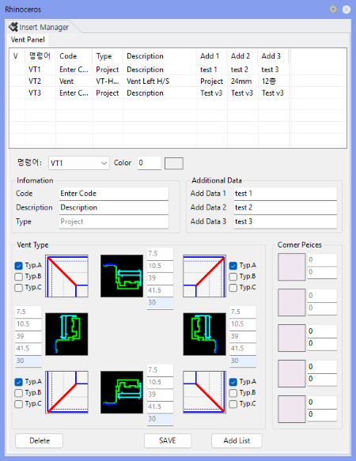

VTOpt
Opens or closes the Vent Type Option Panel. If the panel is already open, running the command again closes it.
Used to define and modify vent types (frame section, code, description) before vent modeling. Types 1-9 configured here serve as the basis for vent generation by VT1-VT9 commands, so type setup should precede vent modeling.

| Item | Description |
|---|---|
| Command Type | Specifies the Vent type number to use for modeling among VT1 ~ VT9. |
| Frame Section | Specifies the section group to use for the Left, Top, Right, and Bottom positions. |
| Code / Description | Enter Code, Description, and Add1~Add3 information to be output in quantity lists and tables. |
| Type Data | Linked to the selected VT number and used in modeling, numbering, and quantity list creation. |
| Command | Description |
|---|---|
| VT1 ~ VT9 | Vent modeling — run after setting options. |
| VtNo | Vent numbering |
| VtList | Generate vent quantity list |